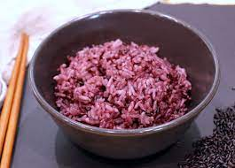

Ansu's purple rice and Cherry wine

ingredients
- 2 cups short grain white rice
- 1 Tbsp black glutinous rice
- 2 cups & 1 Tbsp water (1:1 ratio for IH rice cooker or instant pot)
Directions
- Put the rice into the rice cooker inner pot and rinse the rice until the water is clear. (You will need to do 3 to 4 rounds of rinsing.) Drain the water well.
-
Cover the rice with the water (1:1 ratio) and close the lid. Set the rice cooker to “백미 (baekmi)” setting. If your Cuckoo has an English mode, it may say “glutinous rice”.
- Wait until the rice cooks and switch to the keep warm setting. It takes 23-26 mins to complete. Fluff the rice with the rice paddle. Serve or store it for later. (Refer below for storage guide)